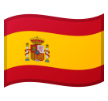
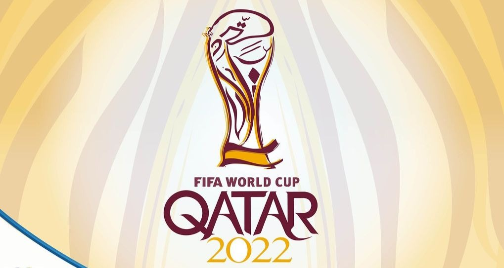
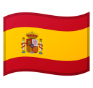

Grupo A
- Catar
- Espanha
- Perú
- Nigéria


Dê play no áudio caso queira ficar mais emergido!
No dia 1º Abril de 2022, A Fifa realizou o Sorteio de Grupos da Copa do Mundo desse ano. A cerimônia aconteceu em Doha. Foram 32 seleções que foram separados em oito grupos para a Copa 2022. Os cabeças de chave foram Catar (país sede), Alemanha, Brasil , Portugal, Argentina, Bélgica, Itália e França. Esta ordem foi definida pelo ranking da Fifa de novembro.
